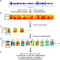

<<<<<<< HEAD
Research
Since 2010 Socos has researched and developed technology capable of predicting outcomes based on naturalistic data. We are now focused on turning commonplace learning experiences directly into assessments which improve meta-learning.
Publications
-

Binkley, M., Erstad, O., Herman, J., Raizen, S., Ripley, M., Miller-Ricci, M., & Rumble, M.
(2012)
Defining twenty-first century skills. In Assessment and teaching of 21st century skills (pp. 17-66). Springer Netherlands.

Chen, E., & Miller, G. E.
(2012)
“Shift-and-Persist” Strategies Why Low Socioeconomic Status Isn’t Always Bad for Health. Perspectives on Psychological Science, 7(2), 135-158.
Cohen, G. L., & Sherman, D. K.
(2014)
The psychology of change: Self-affirmation and social psychological intervention. Annual review of psychology, 65, 333-371.

Ming & Ming
(2012)
Predicting Student Outcomes from Unstructured Data. UMAP2012.
-

Dweck, C.
(2006)
Mindset: The new psychology of success. Random House LLC.
Bumbacher & Ming
(2012)
Pitch-sensitive components emerge from hierarchical sparse coding natural sounds. ICPRAM2012

Geiser, S., & Studley, W. R.
(2002)
UC and the SAT: Predictive validity and differential impact of the SAT I and SAT II at the University of California. Educational Assessment, 8(1), 1-26.
Gertler, P., Heckman, J., Pinto, R., Zanolini, A., Vermeersch, C., Walker, S., ... & Grantham-McGregor, S.
(2014)
Labor market returns to an early childhood stimulation intervention in Jamaica. Science, 344(6187), 998-1001.
Ming, V.L. & Holt
(2009)
Evidence of efficient coding in human speech perception. JASA 129, Num. 3: 1312-1321.

Glogger, I., Schwonke, R., Holzäpfel, L., Nückles, M., & Renkl, A.
(2012)
Learning strategies assessed by journal writing: Prediction of learning outcomes by quantity, quality, and combinations of learning strategies. Journal of educational psychology, 104(2), 452.

Grant, A. M.
(2008)
Does intrinsic motivation fuel the prosocial fire? Motivational synergy in predicting persistence, performance, and productivity. Journal of applied psychology, 93(1), 48.

Karoly, L. A., Kilburn, M. R., & Cannon, J. S.
(2006)
Early childhood interventions: Proven results, future promise (Vol. 341). Rand Corporation.

Kidd, C., Palmeri, H., & Aslin, R. N.
(2013)
Rational snacking: Young children’s decision-making on the marshmallow task is moderated by beliefs about environmental reliability. Cognition, 126(1), 109-114.

Luhmann, M., Hofmann, W., Eid, M., & Lucas, R. E.
(2012)
Subjective well-being and adaptation to life events: a meta-analysis. Journal of personality and social psychology, 102(3), 592.
Ming, N. C., & Ming, V.
(2012 September)
Automated predictive assessment from unstructured student writing. In DATA ANALYTICS 2012, The First International Conference on Data Analytics (pp. 57-60).
Mischel, W., Ayduk, O., Berman, M. G., Casey, B. J., Gotlib, I. H., Jonides, J., ... & Shoda, Y.
(2010)
‘Willpower’over the life span: decomposing self-regulation. Social Cognitive and Affective Neuroscience.
<<<<<<< HEAD =======
>>>>>>> FETCH_HEAD
=======
>>>>>>> FETCH_HEAD
Pellegrino, J. W., & Hilton, M. L. (Eds.).
(2013)
Education for life and work: Developing transferable knowledge and skills in the 21st century. National Academies Press
Roberts, B. W., Kuncel, N. R., Shiner, R., Caspi, A., & Goldberg, L. R.
class="italic">(2007)
The power of personality: The comparative validity of personality traits, socioeconomic status, and cognitive ability for predicting important life outcomes. Perspectives on Psychological Science, 2(4), 313-345.

Rothstein, J. M.
class="italic">(2004)
College performance predictions and the SAT. Journal of Econometrics, 121(1), 297-317.

Wiliam, D.
(2011)
What is assessment for learning?. Studies in Educational Evaluation, 37(1), 3-14.
About Us

Vivienne Ming, PhD
Executive Director
Dr. Vivienne Ming, named one of 10 Women to Watch in Tech in 2013 by Inc. Magazine, is a theoretical neuroscientist, technologist and entrepreneur. She is chief scientist at Gild, an inovative startup that applies machine learning to predict optimal candidates for technology jobs, and to bring meritocracy to job markets. She joined Gild in 2012 to oversee R&D and IP development, solving problems in data mining, text analysis, cognitive modeling and algorithm development. Dr. Ming also co-founded her own cutting-edge edtech startup, Socos, with her wife, Norma. She is a visiting scholar at UC Berkeley's Redwood Center for Theoretical Neuroscience pursuing her research in neuroprosthetics. In her free time, Dr. Ming also explores augmented cognition using technology like Google Glass and has been developing a predictive model of diabetes to better manage blood glucose levels.Norma Ming, PhD
Director of Learning Design
Dr. Norma Ming is a learning scientist and educational technology thought leader who works at the intersection of research and development, policy, and practice. A former high school and university educator, she is now Supervisor of Research in the San Francisco Unified School Didstrict’s Research, Planning, and Accountability department, where she coordinates results-oriented research to help the district implement its strategic plan. She merges a pragmatic understanding of the teaching enterprise with a long-term, systemic vision of how research can illuminate and policy can facilitate better learning. Previously, she taught as a lecturer in Education in Math, Science, and Technology at UC Berkeley’s Graduate School of Education. She earned an A.B. with honors in chemistry at Harvard University and a Ph.D. in cognitive psychology in the Program for Interdisciplinary Educational Research at Carnegie Mellon University.
Engin Bumbacher
Director of Research
Engin is devoted to the development of the company’s core cognitive modeling and predictive analytics technology. He did his master’s thesis project at the Redwood Center for Theoretical Neuroscience at UC Berkeley under the supervision of Dr. Vivienne Ming, applying and further developing elaborate models of information processing to human speech and music. Engin earned his master’s degree with honors in Neural Systems and Computation from the Swiss Federal Institute of Technology Zurich and the Institute of Neuroinformatics, both researching in the field of theoretical neuroscience and exploring models of collective intelligence through implementation of interactive flocking algorithms to control computer sound synthesis and 3D sound positioning. Prior to that, he finished his B.S. with honors in Physics at the same university.